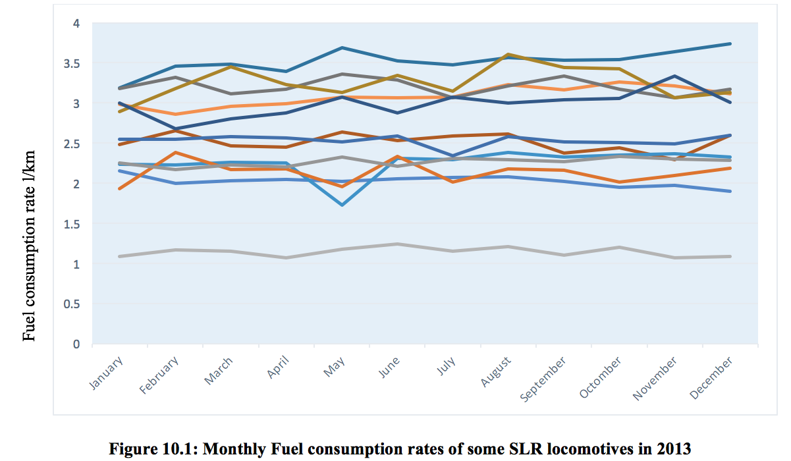

Sri Lankan railway still don’t have any detail about emissions of their locomotive rather than which are available on specifications, but the specifications about are available only for few types of locomotives such as S12, S11.
While the meeting with engineers in Rathmalana workshop engineers, they said that few years back SLR decided to run emission test for every locomotive which are coming for services but with the cost of the test, that procedure wouldn’t succeeded.
Before obtaining function, we follow a method to collect practical data for Locomotives and make relationship between locomotive fuel consumption and emissions. From the literature, what we have found was relationship can be buildup between fuel consumption and running distance and emission. Required details are Route condition and number trains that are allocated for the specific route, Details about trains and locomotives, Route distance, Emission data and fuel consumption data of locomotives
Before collect information about the locomotive, what we need decide was that the duration that we need to collect information. Locomotives are having medium speed high horse power large diesel engines though those are using electrical or hydraulic conversion rather than mechanical conversion. From literature and the interview with Mr. Dilantha Fernando head of motive power of SLR tells that fuel consumption rates of locomotive not change considerable amount with the time. There for to justify that got fuel consumption rate of each type of locomotive within the year of 2013 and bellow shows the monthly fuel consumption rates of some locomotives.
In Sri Lanka railway line is consisting of eight major railway tracks. Those are main line which is from Colombo to Badulla, Puththalama line which is from Raagama to Noor Nagar, kelaniweli line from Colombo to Avissawella, Northern line from Polgahawela to Kankasanthure, Mannar line is from Madawachchiya to Thaleimannar pier, Trincomali line is from Galoya Junction to Trincomalee. Batticcalo line is from Maho Junction to Batticaloa and coastal line is from Colombo to Matara. Those lines are having different route conditions such as altitude, curve of bend.
Initially what we thought is to do this survey for the all the trains running in Sri Lanka, but with the time that remaining and with the number of train available, what we thought was to select a route that can be allocate that procedure to other routes also. Therefor we selected mainline from Colombo to Kandy.
There are few reasons to select this route because altitude variance and curve variance of the track. Other than that trains which are travel in Puttalama line go through main line up to Raagama, northern line trains Batticaloa line and Trincomalee line trains are travel through this line up to Polgahawela junction. Below shows the railway map and altitude variance of the mainline up to Kandy railway station.
Figure 10.2: Railway map of Sri Lanka
Figure 10.3: altitude variation of SLR railway line from Colombo to Peradeniya junction
To collect relevant information for the project was to collect through a survey which is collecting data from the locomotive drivers and guards. Instead of that task is to collect those data for a week. Survey form is attached to the Annexes. There were hundreds of trains that are operating within the week. Task was to collect all the data within a week.
Conducting a survey was not successful. Drivers were not supporting to do the survey, there for decision was made that to collect data from the log books.
SLR maintaining log book for each locomotive and there are log book for diesel inlet and locomotive allocation for trains. There for collect those information from the logbook for the June 2014.
There were five sheds that SLR allocated their trains, each of shed were allocated different type of locomotives and different type of train operations. Each shed needs to run their allocated train operations with the available locomotives and carriages.
Every shed top up their locomotives while entering to the shed. For some locomotives diesel inlet is done from the stations like Polgahawela and Badulla. All fuel pumping data will reserved each shed at the end of every month.
Data which reserved from the locomotive was entered to the soft copies for analyzing purposes. Diesel consumption data can be directly entered, travel distance of the locomotives were not written on log books. There for those data was recorded with the train numbers, distance travel need to find out with train number. Sample of soft copy was shows below
Figure 10.4: sample of data entered format
To prepare emission inventory, initial step is to find out emission of each type of locomotive.Allocating to tiers
Sri Lanka railway consisting two major type of locomotives, those are diesel electric locomotives and diesel hydraulic locomotives. Most of them were diesel electric locomotives. Those were manufactured in 1954 to 2012, by different locomotive manufactures. Fuel consumption of locomotives and locomotive emissions are deals with manufacturing year. There for these are allocated to tiers according to the year of manufacturing. For categories used the procedure in literature.
Tier |
Year of manufacturer |
Locomotives |
Tier 0 |
Before 2001 |
M2/M4/M5/M6/M7/M8/M9/S8 |
Tier 1 |
2002 - 2004 |
S9 |
Tier 2 |
2005 - 2010 |
S10 |
Tier 3 |
2011 - 2014 |
M10/S11/S12 |
Above categorizing is done with the regulation of Environment protection authority of USA. But there is a drawback, that categorization has done to the Locomotives that used in USA. In Sri Lanka railway locomotives are from many countries. There for categorizing need to done with the gas analyzer as mention in the literature review.
For the calculation, require emission data was reserved from the EPA emission standards. In Sri Lanka, train distance are not much larger compare to the USA railway, there for rather than express trains all other trans are considered as switching locomotives.
According to the EPA while burning diesel in locomotive engines 10180 g/bhp·hr was release to the environment. For the every locomotive this emission standard has been used. EPA emission standards are shown in below. All the details are represented from grams per break hours power hour (g/bhp·hr).
Tier |
Year of manufactured |
HC |
CO |
NOx |
PM |
Tier 0 |
Before 2001 |
2.10 |
8.0 |
11.8 |
0.26 |
Tier 1 |
2002-2004 |
1.20 |
2.5 |
11.0 |
0.26 |
Tier 2 |
2005-2010 |
0.60 |
2.4 |
8.1 |
0.13 |
Tier 3 |
2011-2014 |
0.60 |
2.4 |
5.0 |
0.10 |
To prepare emission inventory, started to collect information per particular day. That day was normal working day within the month June 2014. After collection locomotive information, next task is to log all train operations that has been carried out within that day. Then log them in to the document and separate according to the time and station vise. Next step is allocate fuel consumption rates from the prepared data of June 2014. Final step is relate fuel consumed with the emission rates obtain in previously.
In general, emission inventories are prepared for the annual usage. But in this case, emission data was prepared for single working day. There for to extrapolate for year, seasonal demand has to be concerned. Other than that passenger distribution changes between week days and weekends need to be consider.
Emission data was available from grams per break horse power hour. But SLR locomotive has fuel consumption rates to kilometer. There for following assumptions and calculations has been used.
Convert grams per break horse power hours into grams per kilowatt hours.
1 g/bhp.h = 1.36 g/kWh 1 kWh = 3600 kJ Therefore 1.36 g/kWh = g/kJ
Calorific value of Diesel is between 43400 kJ/kg and 44800 kJ/kg. for the calculation assumed that calorific value of diesel is 44000 kJ/kg. From 1 kg of diesel 44000 kJ energy can be reserved. From 1 kJ of diesel grams of emission happen There for from 44000 kJ, g emits. From 1 kg of diesel g emits. Density of diesel is get as 950 g/l There for from 1 liter of diesel grams will emits There for 1 g/bhp.hr = 15.79 g/l
This emission inventory is prepared using by existing data and those emission details are not the exact values. This inventory is a theoretical emission inventory. Changes of the altitude, and other route conditions are not concerned. Monthly average fuel consumption data has been used to prepare this inventory. This inventory is prepared to have understand about emission in Sri Lanka railway.
Figure 10.5: Sample of emission inventory